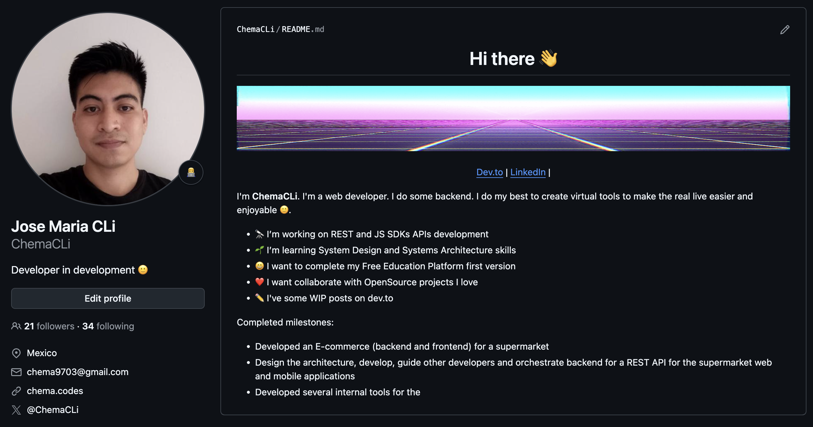
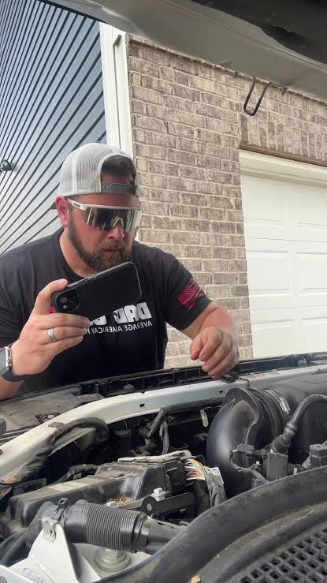
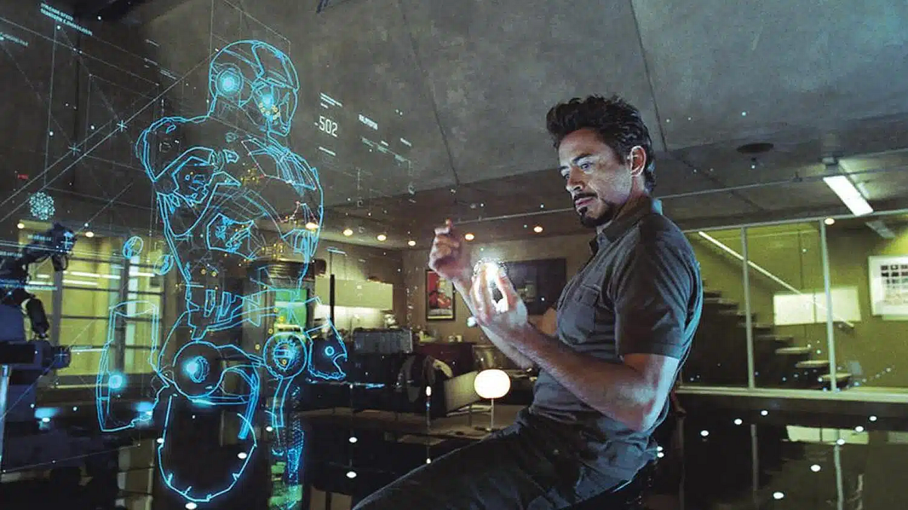
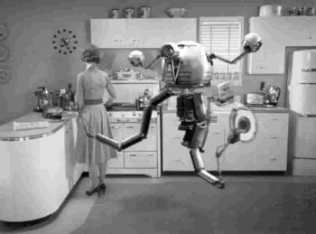
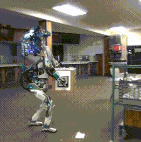
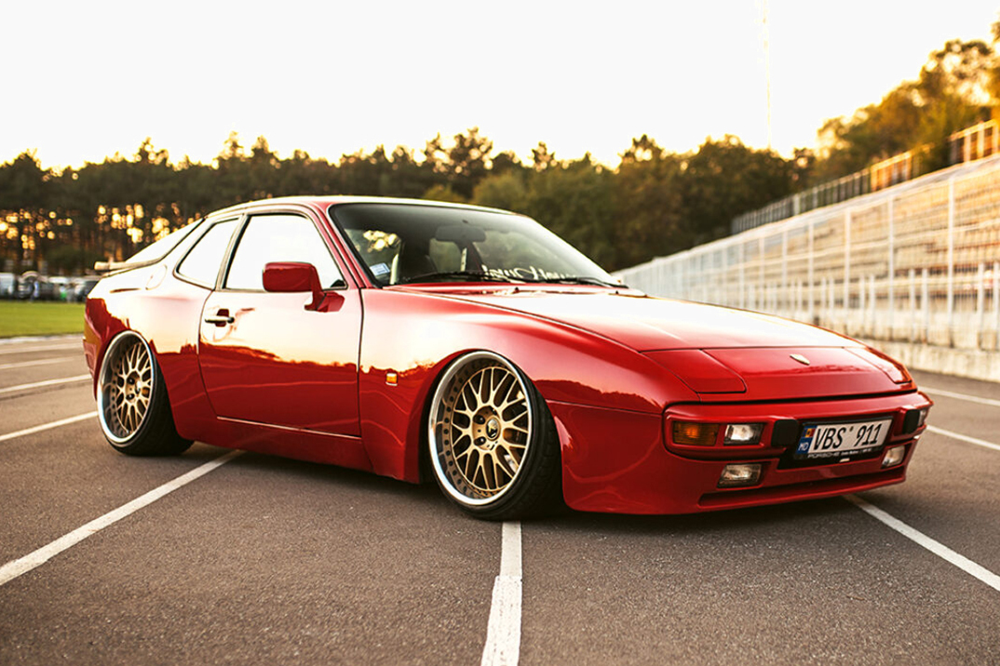
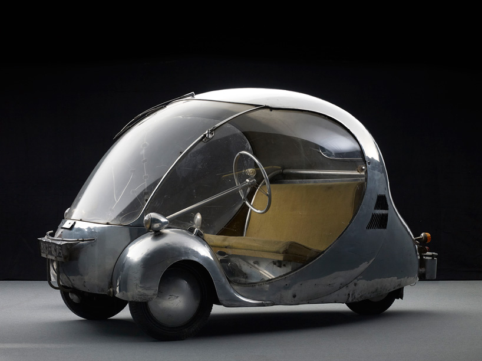
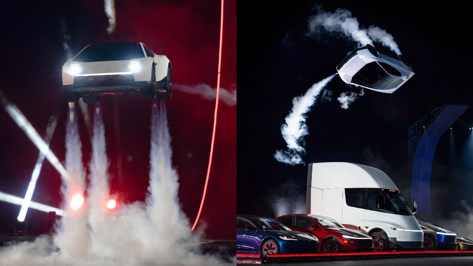

// AWS User Group Orizaba
> TALLER PRÁCTICO
Todos pueden
programar con Kiro
programar con Kiro
Transforma tus ideas en aplicaciones reales usando AI
$
José María Chico López
/
github.com/ChemaCLi
> SPEAKER
José María
Chico López
Ing. de Sistemas de profesión
Software Crafter de oficio
github.com/ChemaCLi
> REPO DEL TALLER
// AWS User Group Orizaba
> INSTALA ANTES DE EMPEZAR
Descarga Kiro
> EDITOR
Kiro IDE
Editor completo con el agente
kiro.dev/ide
> TERMINAL
Kiro CLI
El agente en tu terminal
kiro.dev/cli
// AWS User Group Orizaba
> WHOAMI
Mi perfil de GitHub

// AWS User Group Orizaba
Lo que haremos hoy
01
Kiro: qué es, qué resuelve y esquema de precios
02
Método para abordar un proyecto
03
Tres escenarios para trabajar con IA
04
Construimos una app en vivo
05
Práctica y cierre
// AWS User Group Orizaba
> EL PUNTO DE PARTIDA
El internet desbloqueó la barrera técnica
Puso al alcance de cualquier persona el conocimiento y las herramientas para reparar y crear sus propias herramientas y productos.

// AWS User Group Orizaba

> EL SALTO
La IA redujo muchísimo la fricción
Ya no solo es posible: ahora también es fácil.
// AWS User Group Orizaba
> EL RUIDO
Todos publican casos de éxito
· LAS EMPRESAS
Anuncian que la IA hará todo por nosotros.
· LAS STARTUPS
Productos y empresas creados en tiempo récord.
· LINKEDIN
Ejércitos de agentes de IA que, dicen, trabajan mejor que programadores humanos.

// AWS User Group Orizaba
> LA REALIDAD
En la práctica, las cosas no van tan bien
Entonces, ¿por qué no tenemos los mismos resultados?
🤖💥
expectativa vs realidad

// AWS User Group Orizaba
> EL CUENTO DEL AUTO
01 / 06
Le pides algo a la IA
Tú: «Quiero un auto reluciente, diseño sofisticado, moderno, para 2 pasajeros».

// AWS User Group Orizaba
> EL CUENTO DEL AUTO
02 / 06
La IA dice que sí a todo
IA: «¡Excelente idea!»
// AWS User Group Orizaba
> EL CUENTO DEL AUTO
03 / 06
Resultado decepcionante
La regañas y le pides que se esfuerce y genere algo decente.

// AWS User Group Orizaba
> EL CUENTO DEL AUTO
04 / 06
Lo hace, pero sale caro
IA: «Aquí tiene, señor. Lo hice con mis lágrimas y 20 dólares de tokens».
// AWS User Group Orizaba
> EL CUENTO DEL AUTO
05 / 06
Impresionante, pero impráctico
Un resultado vistoso, pero poco útil y posiblemente ilegal.

// AWS User Group Orizaba
> EL CUENTO DEL AUTO
06 / 06
Lo que realmente necesitabas
...probablemente era algo ligeramente distinto a lo que imaginabas en primer lugar, de ahí la importancia de contar con alguien que te cuestione y te ayude a refinar las ideas.
// AWS User Group Orizaba
> EL MISMO PUNTO DE PARTIDA
¿Qué pasa si partimos del mismo prompt?
$ PROMPT
«Una aplicación que me permita registrar mis tareas, categorizarlas por tipos x, y, z, con un pomodoro incluido que me invite a continuar mi progreso».
// AWS User Group Orizaba
> DIFERENTES RESULTADOS
01 / 04
Solo el prompt
Sin contexto ni método: solo la idea tal cual.
// AWS User Group Orizaba
> DIFERENTES RESULTADOS
02 / 04
Prompt + skills
El mismo prompt, apoyado en skills recomendadas de internet.
// AWS User Group Orizaba
> DIFERENTES RESULTADOS
03 / 04
Método con Kiro
Primero plan, luego steerings, skills activadas y custom agents.
// AWS User Group Orizaba
> DIFERENTES RESULTADOS
04 / 04
Specs progresivos
Kiro cuestiona, identifica gaps y ayuda a refinar la idea.
// AWS User Group Orizaba
01 · KIRO
Un agente de IA que te acompaña de la idea al código, desde donde trabajes
Aterriza ideas
Convierte lo que quieres en requerimientos, diseño y tareas
Mantiene el contexto
Reglas del proyecto y agentes que respetan tu forma de trabajar
Delega el trabajo pesado
Construye, prueba y automatiza mientras tú decides
// AWS User Group Orizaba
Un mismo Kiro, cinco formas de usarlo
Superficie
Qué es
Ideal para
IDE
Editor completo con agente, specs y reglas del proyecto
Proyectos con control fino del código
CLI
El agente en tu terminal, fácil de automatizar
Scripts, flujos y servidores
Web
Kiro en el navegador, sin instalar nada
Equipos de laboratorio o prestados
Mobile
Seguimiento desde el teléfono (preview)
Revisar avances en movimiento
Crew
Espacio persistente que recuerda y programa tareas
Automatizar trabajo y vida personal
// AWS User Group Orizaba
NUEVO · OPEN SOURCE
Kiro Crew: un equipo de agentes que no olvida
Memoria entre sesiones
Recuerda tus proyectos y convierte tus correcciones en lecciones editables
Tareas programadas
Trabajos recurrentes y monitoreo que siguen corriendo cuando no estás
Varios agentes a la vez
Conversaciones en paralelo y subagentes que te reportan resultados
Desde donde estés
Escritorio, una máquina remota o canales de chat como Telegram o Discord
Gratis (Apache 2.0) · usa los créditos de tu plan Kiro · corre sobre Kiro CLI en macOS y Linux
// AWS User Group Orizaba
¿Qué uso según lo que necesito?
Algo personal
Web o IDE en modo Vibe para explorar sin miedo
Crew para automatizar tus rutinas
Resolver un problema
IDE o CLI con reglas de proyecto y agentes
Crew para lo que se repite cada semana
Solución profesional
IDE en modo Spec, estándares y hooks
CLI para integrarlo en flujos de equipo
// AWS User Group Orizaba
Precios: todo se mide en créditos
Plan
USD / mes
Créditos
Free
$0
50
Pro
$20
1,000
Pro+
$40
2,000
Pro Max
$100
5,000
Power
$200
10,000
El modelo importa
Cada modelo consume créditos a distinta tasa. [Equivalencia en tokens por crédito: verificar en kiro.dev/pricing]
Excedente
En planes de pago, $0.04 USD por crédito extra. Los créditos no se acumulan al mes siguiente.
Plan de estudiante
Un año gratis con 1,000 créditos al mes, sin tarjeta. Se verifica una sola vez con correo universitario.
// AWS User Group Orizaba
Descarga y prepárate
Kiro IDE
Kiro CLI
Kiro Web
Kiro Mobile
Kiro Crew
Crew en GitHub
Plan de estudiante
Documentación
Repo del taller
[github.com/usuario/repo]
CLI en macOS / Linux: curl -fsSL https://cli.kiro.dev/install | bash
// AWS User Group Orizaba
02 · MÉTODO
Toda solución define tres cosas
Entrada
¿Con qué datos?
→
Proceso
¿Cómo se va a hacer?
→
Salida
¿Qué espero obtener?
Se lee de izquierda a derecha, pero yo lo diseño de derecha a izquierda.
// AWS User Group Orizaba
Empiezo por la salida
1
Salida
¿Qué quiero ver exactamente al final?
2
Proceso
Analizo lo suficiente para saber qué voy a necesitar
3
Entrada
Consigo los datos o busco alternativas
4
Pulir
Ajusto la lógica hasta obtener el resultado deseado
// AWS User Group Orizaba
El método es el mismo. Lo que cambia es qué tan rigurosos somos.
Entre más claros seamos, mejores resultados obtenemos.
// AWS User Group Orizaba
03 · ESCENARIOS
¿En qué escenario estás?
01 · Exploración
“Todavía no tengo clara la idea”
La IA pregunta, propone y se cuestiona. Aceptamos sorpresas.
02 · Compartible
“Sé el cómo, no tanto el qué”
La IA respeta principios mientras definimos qué construir.
03 · Profesional
“Debe estar claro antes de avanzar”
Muralla de preguntas, estándares y validación.
La IA no se regula sola: hay que decirle cómo hacerlo.
// AWS User Group Orizaba
ESCENARIO 01 · EXPLORACIÓN · PERSONAL
Explorar antes de construir
Explorar la idea
→
Qué necesito
→
Cómo verifico
→
Delegar
CÓMO SE LO PIDO
Antes de construir, hazme preguntas para entender qué quiero. Si algo es vago o contradictorio, dímelo. Propón cómo comprobaremos que funciona.
// AWS User Group Orizaba
ESCENARIO 02 · COMPARTIBLE · PERSONAL ÚTIL PARA OTROS
Validar ideas que otros usarán
Definir el qué
→
Acordar principios
→
Construir y probar
→
Compartir
CÓMO SE LO PIDO
Definamos juntos la funcionalidad. Todo lo que construyas sigue estos principios: [...]. Si una propuesta los rompe, avísame y dame una alternativa.
// AWS User Group Orizaba
ESCENARIO 03 · PROFESIONAL
La muralla de preguntas
EN LUGAR DE
“No.”
→
LA IA RESPONDE
“Está bien, pero antes aclaremos estas dudas.”
Puertas por etapa
No se avanza sin resolver las dudas que bloquean
Estándares y patrones
Principios explícitos, no implícitos
Validación con evidencia
Cómo se comprueba que se aplicaron bien
// AWS User Group Orizaba
Un equipo de agentes, cada uno con su rol
guia
Conduce el flujo y delega en los demás
analista-requerimientos
Extrae qué quieres con preguntas
disenador
Pantallas, flujo y modelo de datos
constructor
Implementa tarea por tarea
tester
Pruebas automáticas y guía manual
revisor
Revisa contra estándares y principios
Los agentes son los mismos en los tres escenarios. Las reglas de cada carpeta definen qué tan rigurosos son.
// AWS User Group Orizaba
04 · EN VIVO
Construyamos: [nombre de la app]
taller-ia-apps/
├─ 01-exploracion/
├─ 02-compartible/
├─ 03-profesional/
├─ agentes/
└─ plantillas/
1
Descarga el repo y copia la carpeta de tu escenario
2
Renómbrala con el nombre de tu app y ábrela en Kiro
3
Pega el contenido de prompt-inicio.md en el chat
4
Responde las preguntas y deja que el flujo te guíe
// AWS User Group Orizaba
05 · TU TURNO
Elige una idea. Define su salida. Identifica tu escenario.
Llena plantillas/ficha-idea.md y empieza con el prompt de tu carpeta.
¿Preguntas? · [contacto] · [github.com/usuario/repo]